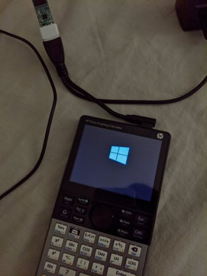

Hack
Як захистити свій комп'ютер ?

Хакер встановив Windows 10 на калькулятор

Хакер зміг встановити Windows 10 на калькулятор. Він той хакер, який встановив повну версію Windows 10 на Windows Phone і OnePlus 6.
Хакер, який відомий під ім'ям @imbusho в Твіттері, зміг успішно встановити Windows 10 IoT Core на основний графічний калькулятор HP, а не на базовий чи науковий калькулятор з плюсом, множенням і діленням, які ми зазвичай використовуємо.
Для тих, хто не знає, Windows 10 IoT - це сімейство операційних систем від Microsoft, розроблене для використання у вбудованих пристроях, таких як пральна машина, автоматичний дверний замок, Rasberry Pi, Glas Thermostat і багато інших.
За словами хакера, перша спроба завантаження операційної системи вдалася з деякий перед-ОС-помилкою. В результаті Windows 10 ще не працює належним чином.
Хоча Windows 10 IoT Core НЕ забезпечує повноцінної взаємодії з Windows Shell, він потенційно може запускати універсальні додатки (UWP) у фоновому режимі.
Хакер, який відомий під ім'ям @imbusho в Твіттері, зміг успішно встановити Windows 10 IoT Core на основний графічний калькулятор HP, а не на базовий чи науковий калькулятор з плюсом, множенням і діленням, які ми зазвичай використовуємо.
Для тих, хто не знає, Windows 10 IoT - це сімейство операційних систем від Microsoft, розроблене для використання у вбудованих пристроях, таких як пральна машина, автоматичний дверний замок, Rasberry Pi, Glas Thermostat і багато інших.
За словами хакера, перша спроба завантаження операційної системи вдалася з деякий перед-ОС-помилкою. В результаті Windows 10 ще не працює належним чином.
Хоча Windows 10 IoT Core НЕ забезпечує повноцінної взаємодії з Windows Shell, він потенційно може запускати універсальні додатки (UWP) у фоновому режимі.